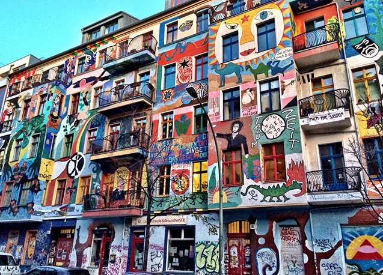
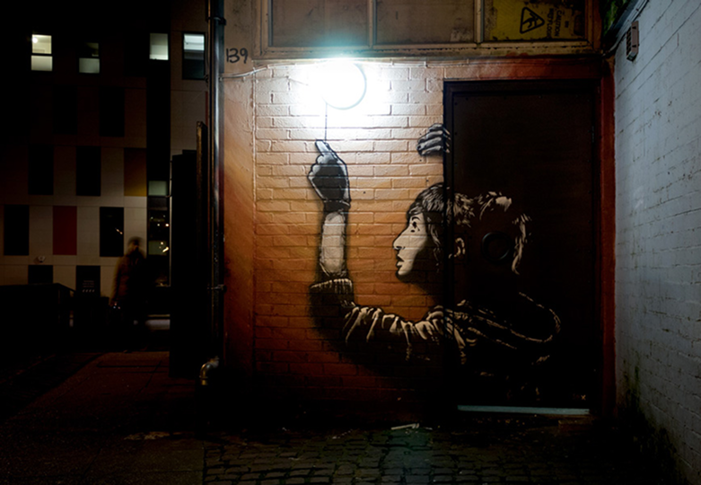
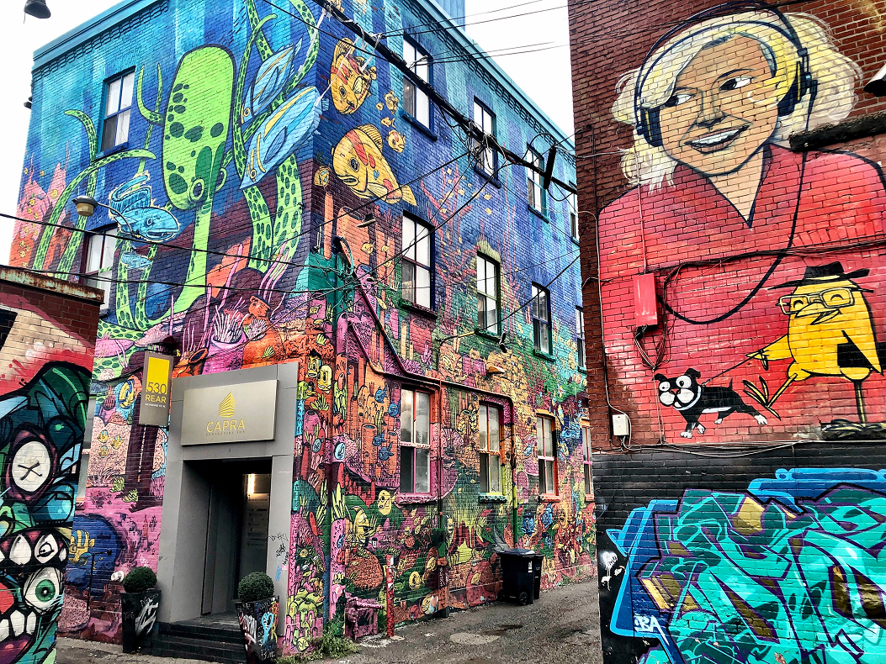

Ce qui pour certains dégrade la ville, pour d’autres la révèle ou l'embellie.

Le street art dérange. Il questionne l’ordre urbain. Il transgresse.
La nuit, chaque trait de peinture peut devenir un risque, une course, une arrestation.
=Ce qui pour certains dégrade la ville, pour d’autres la révèle ou l'embellie.
Le street art dérange. Il questionne l’ordre urbain. Il transgresse.
L’artiste devient parfois hors-la-loi pour créer. Pourtant, ces œuvres contestées finissent parfois dans les musées.
L’esthétique qu’on traquait hier se vend aujourd’hui en vitrines et campagnes publicitaires. Quand l’art né dehors entre au musée, il gagne un cadre… mais perd peut-être une part de sa liberté.